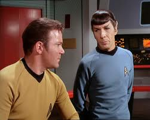

Star Trek
 De: La Frikipedia, la enciclopedia extremadamente seria.
De: La Frikipedia, la enciclopedia extremadamente seria.
De la serie Programas de TV:
Kirk sedunciendote con la mirada
| Idioma original:
|
Klingon
|
| Creador:
|
Sheldon Cooper
|
| Duración:
|
30 minutos
|
| No. Episodios:
|
73 o 72
|
| No. Temporadas:
|
1
|
| ¿Aún se transmite?:
|
No
|
| Género:
|
Humano, vulcano y romulano
|
| Nivel de frikismo:
|
Infinito
|
| Películas:
|
12
|
Pak't pol!
Star Trek es la saga galáctica por excelencia, adorada por los frikis y extraterrestres con orejas de pico y sin vida social (con permiso de Star Wars).
The original serie (TOS)
El espacio... la última frontera. Estos son los viajes de la nave Enterprise, en su misión de cinco años: exploración de nuevos mundos, búsqueda de nuevas civilizaciones y nuevas formas de vida, llegando donde ningún hombre ha llegado antes.
Lo que empezó siendo un mensaje a favor de la tolerancia hacia otras razas/culturas en la serie original acabó siendo un alegato a favor de la jubilación tardía y del vino añejo. Kirk, Spock y cía tardaron bastante en ser reemplazados por personajes igual de carismáticos que ellos. De hecho se duda de que lo lograsen. El último intento fue Scott Bakula, dios mío........ No se descarta una nueva entrega con las aventuras de la tripulación del enterprise original en el hogar del jubilado compitiendo con una alianza borg-romulana que pretenda hacerse con toda la sopa de ajos que prepare el cocinero.
Uno de los méritos de Star Trek en cuanto a sus contribuciones al romulanos y vulcanos, las orejo-entrecejas de los Data, etc... Que se sepa, en la saga de Star Wars (en mis tiempos La Guerra de las Galaxias), sólo se habla castellano y cheewbakés.
Los Trekies. Entre ellos, aparte del empeño estúpido de embutir sus rechonchos cuerpos en mallas con intercomunicadores de pega, se da un curioso enfrentamiento entre los seguidores de la TOS (serie original con el capitán Kirk) y los de la TNG (La Nueva Generación), aunque también hay algún pringao seguidor de Espacio Profundo 9 o Voyager.
Personajes
 Kirk: Ataquen!!!!
Spock: Pero señor son civiles.
Kirk: dije ataquen!!!!
- James T. Kirk:Jefe de la nave , asesino de cualquier cosa viviente y copia de Zap Branigan y no al revés como dice Wikipedia. Ademas de un casanova que se tira cualquier femina del la serie (menos a uhura, pero estuvo cerca).
- Spock:Elfo mal peinado que tiene la manía de hacer sombras con las manos, sin contar la capacidad de no encabronarse nunca, es el ídolo de muchos fikis y su saludo el sueño mojado de muchos mas.
- Leonard McCoy:Doctor y el sadico de la serie torturando a los pasientes con inyecciones y otras cosas, ademas es el enemigo jurado de Spock.
- Uhura:La buena de la serie y novia de kirk aunque no paso nada aunque kirk hizo todo lo posible pasa que si.
- Scott "Scotty:El ingeniero de la nave y amigo de kirk.
Diferencias entre Star Wars y Star Trek
Por ejemplo, en la primera se habla del pasado y en la segunda del futuro, en Star Wars hay una fuerza mística y en Star Trek la razón mueve el universo... En general los seguidores de ambas series se odian a muerte, hasta el punto que la 3ª Guerra Mundial de 2076 tuvo esta disputa como origen.
Razas

IP anónima: No me hagas esa seña.
Algunas de las razas frikis son:
- Los Klingon.estos bichos tienen que ir al cirujano de la Esteban, puesto que entre que tienen unas arrugas en la frente que parecen montañas y la nariz mirando a Cuenca.
- Romulanos. (pais natal de ZP) Son personas incomprendidas, que no tienen ningun tipo de sentimientos, genital tampoco asi que se amargan y se dedican a poner la cejas como si un comic manga estuviera cagando.
- Vulcanos. Raza que se crea cuando la madre de Spock se va de copas por la tierra (asi salio Spock).
- Ferengi. Se trata de unos seres pequeños, cuyas orejas se fusionan con sus cejas-frente. Aparte de descuidar mucho sus dentaduras, son avariciosos y roban todo lo que pillan, desde caramelos a los niños hasta naves espaciales.
- Borg. Ellos se definen como
una comuna hippy un colectivo. Se presentan siempre de la misma forma. Para ello usan mayoritariamente oraciones simples (también alguna compuesta) directa y respetuosamente: "Somos los Borg. Bajen sus escudos. Rindan sus mierdosas naves. Añadiremos sus primitivas cualidades tecnológicas y deficiencias biológicas a las nuestras. Su corrupta cultura se adaptará para servir a la nuestra. La negociación es irrelevante. La resistencia es fútil. Seréis asimilados". Son grandes admiradores de los ordenadores. Sufren erupciones moteadas en la piel y extrañas mutaciones consistentes en que les salen máquinas por el cuerpo, todo debido a su dieta, consistente en procesadores Intel.
Autor(es):
- Nexo
- Hari Seldon
- Anxova
- Paul River
- Frikiman
- Aque
- Magneto
- AMAYOSKISTP
- Guepard
- Mierdashi
Frikipedia 2005-2016, Licencia
GFDL 1.2 - Extraído por FrikiLeaks